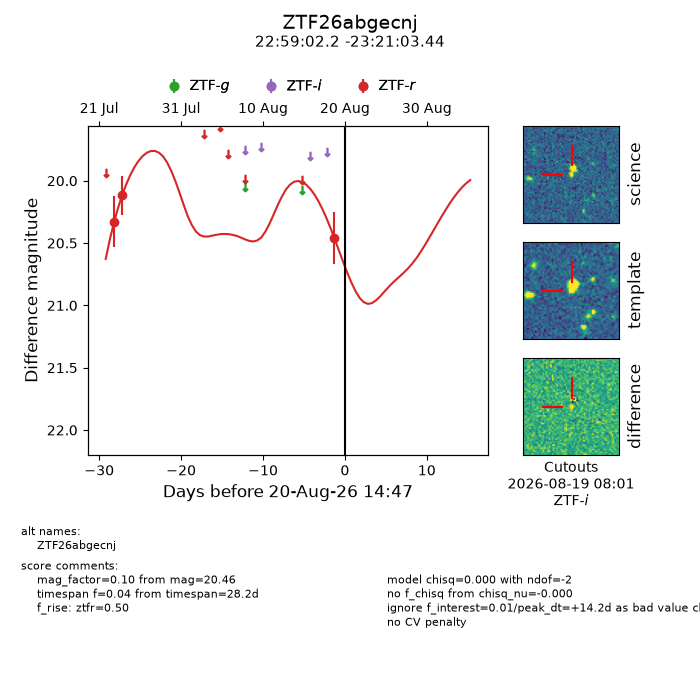
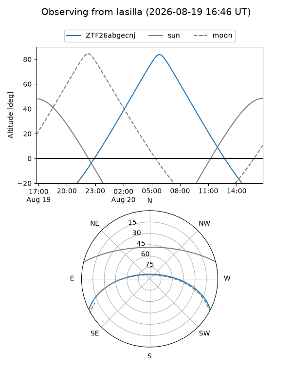
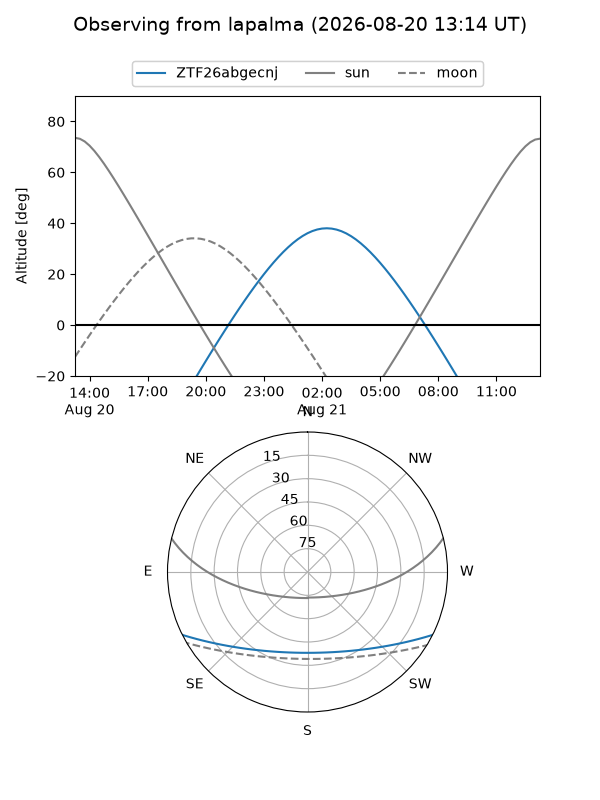
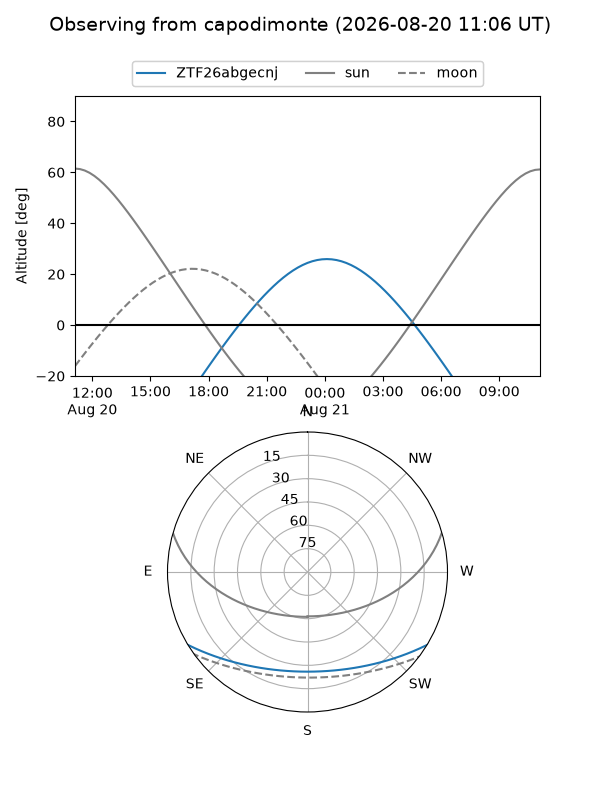
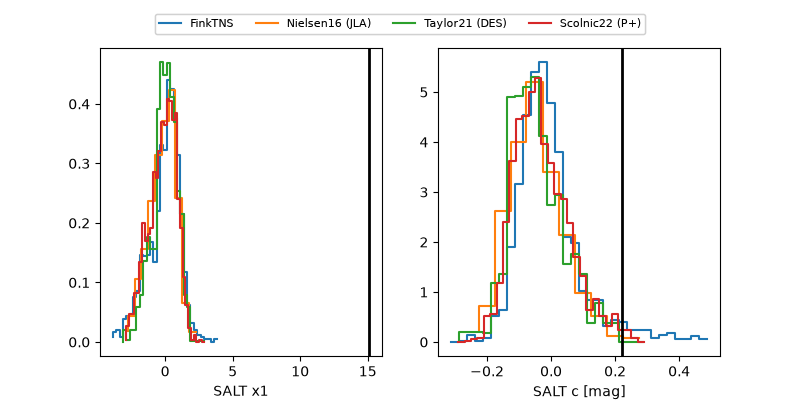

ZTF26abgecnj
Target ZTF26abgecnj at 2026-08-20 14:50
Aliases and brokers:
FINK-ZTF: ztf.fink-portal.org/ZTF26abgecnj
Lasair-ZTF: lasair-ztf.lsst.ac.uk/objects/ZTF26abgecnj
ALeRCE-ZTF: alerce.online/object/ZTF26abgecnj
Direct TNS query: direct search
alt names
ZTF26abgecnj (ztf,fink_ztf)
Coordinates:
equatorial (ra, dec) = 344.7590,-23.35096
equatorial (HMS+DMS) = 22:59:02.17,-23:21:03.44
galactic (l, b) = (35.1211,-64.35745)
Flags:
peak dt: +14.2
Photometry:
last ztfr=20.46
3 ztfr detections
Lightcurve

Visibility



Additional plots
